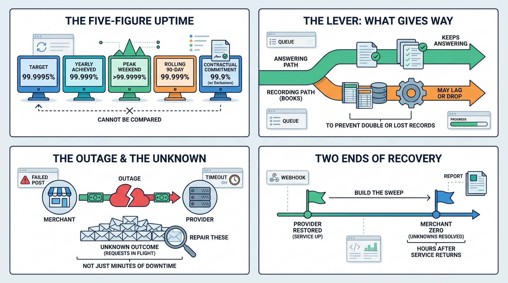

Part VIII — SCALE: Reliability, Data and Operations
Down Is Not an Option: Reliability and Availability
AI-assisted: researched and written with Claude Code; illustrations generated with Gemini. How this works

Image generated by Google Gemini (gemini-3-pro-image-preview)